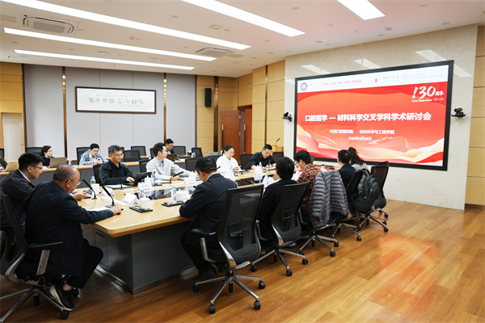

学院通知 · 科研创新
口腔医学—材料科学交叉学科学术研讨会在我院成功举办
发布时间：2026/04/30
为深入推进学科交叉融合，探索材料科学前沿技术在口腔医学领域的创新应用，2026年4月28日下午，由我院与四川大学材料科学与工程学院联合主办的“口腔医学—材料科学交叉学科学术研讨会”在我院教学楼华西厅举行。材料科学与工程学院邹勇书记、王泽高副院长、我院袁泉副院长、两院科研团队代表出席本次研讨会。 会议伊始，材料科学与工程学院邹勇书记和我院袁泉副院长分别致辞。邹勇书记表示，医学与材料的交叉融合是“医学+”战略的重要学科方向，期待双方在创新材料与技术开发方面深化合作，共同探寻口腔应用场景与材料技术的结合点。袁泉副院长介绍了我院在口腔仿生修复材料、生物活性材料等学科交叉研究领域的研究情况，并表示希望面向国家重大需求，与材料科学与工程学院专家团队紧密协作，以创新材料研发破解口腔医学难题。 在专题报告环节，材料科学与工程学院的王泽高教授、邹海洋研究员、张传芳教授、蒋来明副研究员，以及我院的裴锡波教授、梁坤能教授、金樱副教授、马文娟副研究员先后作学术汇报，围绕半导体材料、智能传感、压电超声技术、组织修复、慢性感染防治、核酸纳米药物递送等前沿方向展开深入交流。与会师生就各自感兴趣的研究领域和观点踊跃互动，针对科研中遇到的实际问题及解决思路进行了热烈讨论。 本次研讨会为口腔医学与材料科学的交叉合作搭建了良好的交流平台，切实增进了华西口腔医学院与材料科学与工程学院教师之间的相互了解，拓宽了科研视野。双方一致表示，将以此为新起点，积极推进人才培养与科研领域的深层次学科交叉合作。
